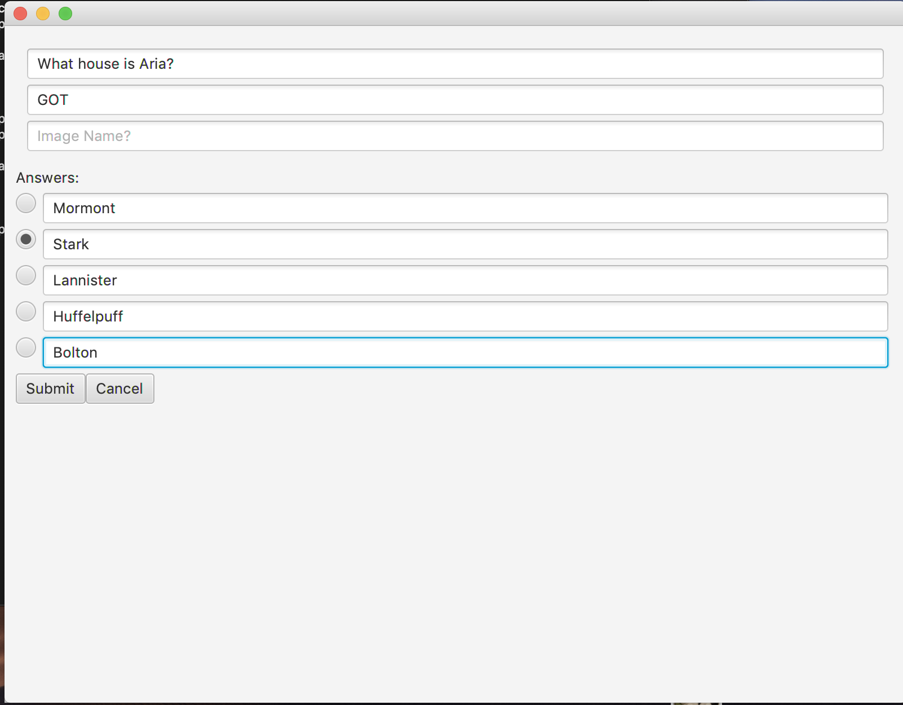
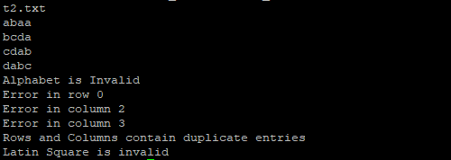
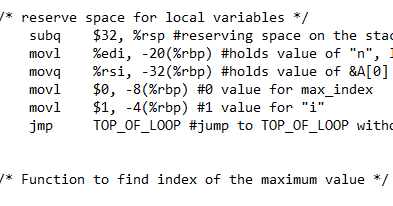
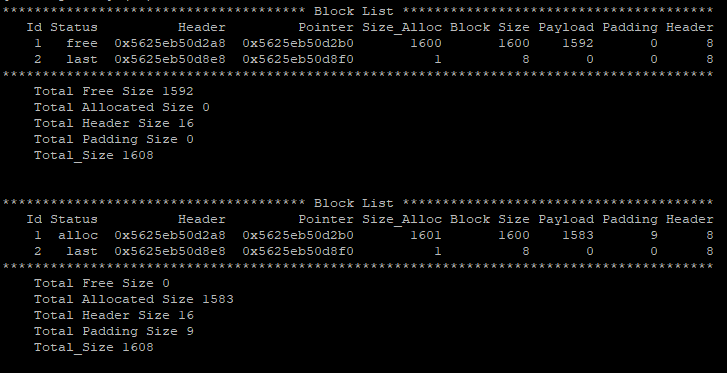

In this project, I created a quiz generator, in which one is able to insert a set amount of questions from a textfile and the program will create a UI for the user to interact with and take random quizes from it. The program is able to read data, check if the questions answered are correct, and make edits and changes to the textfile itself, inserting new questions. Multiple counters are avaliable such as total number of questions, the score of the quiz, etc...
Skills used:

In this project, I created a C program that check if a certain textfile was considered a "latin square". Specifically, it would make sure that the text is a n x n square of n different symbols (each symbol can only appear in each row once). This project explored the usage of dynamically allocated memory as well as pointer arithmetic.
Skills used:

In this project, to understand how C code works and how it communicates with the hardware, I wrote a simple assembly code which would find the maximum value of an array. Through assembly code, I set up the stack, reserve space for local variables, and set up loops and incrementation till the largest value is found.
Skills used:

In this project, I created a memory allocator that takes an input (parameter) and allocates memory space. It will the return a pointer to that memory space. This creates 2 new blocks, one that is allocated, and one that is still free. If you want to free, it will free that block that the pointer refers to, but also coalesce with adjacent blocks if either or both are also free. This is using the first fit model.
Skills used: